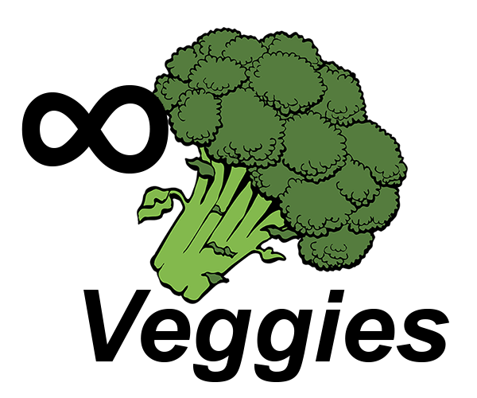
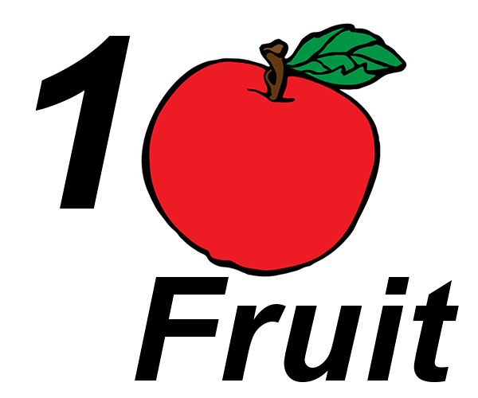

Here's a general meal formula to follow for your 4-5 meals per day:
These are just suggested servings, of course.
Technically, you could complete your daily macros using just fast food.
However, remember the difference between good calories and bad calories.
So remember to make good choices and allow yourself to 'cheat' every now and then!
| Suggested Servings Per Meal | |||
|---|---|---|---|
|  |  | ||
|
|
You can have as much as you want! Seriously!
|
|